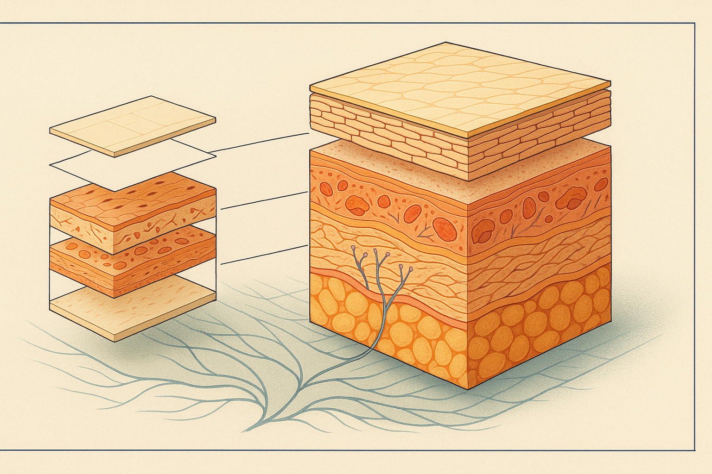
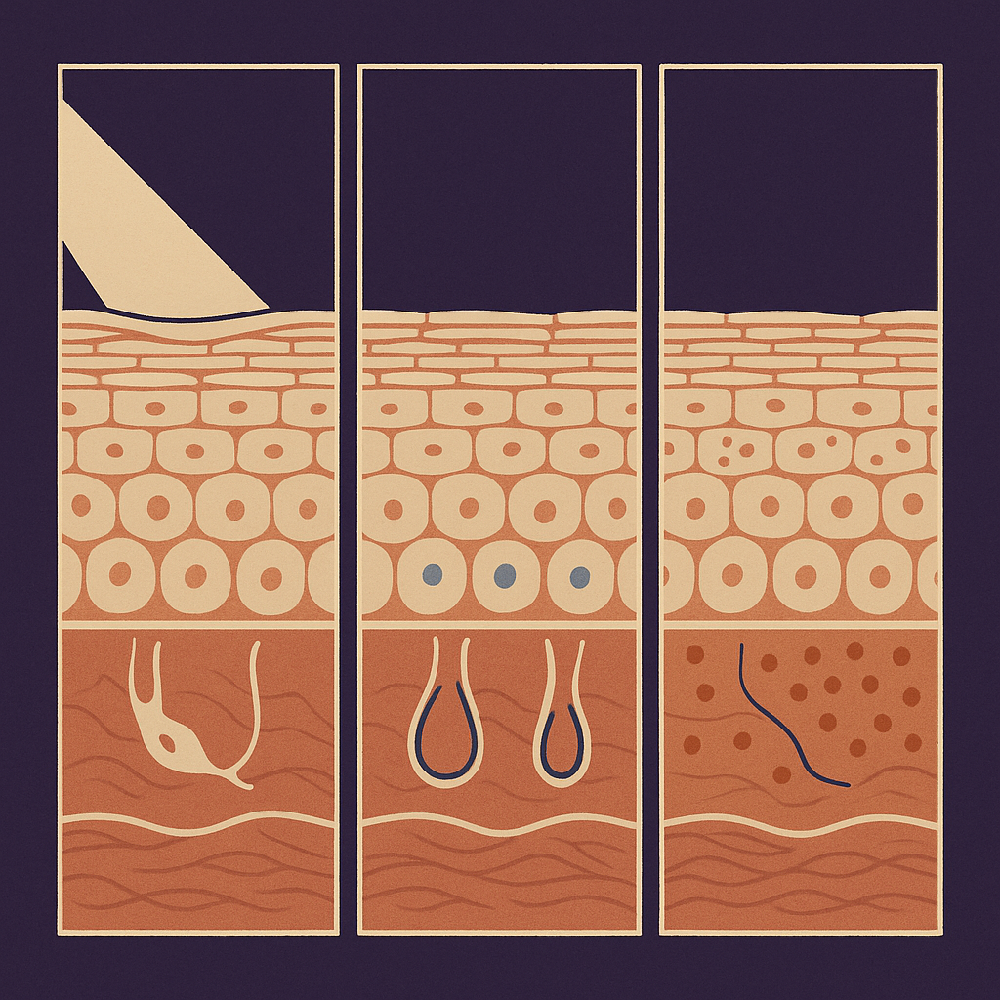
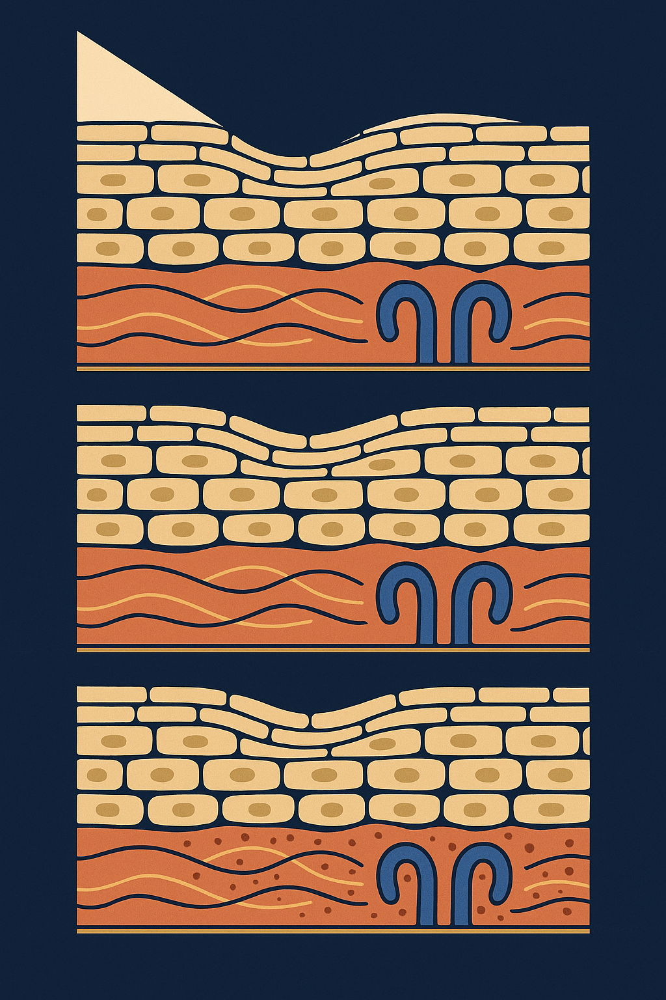

Review below. Reply approve to publish the Facebook post, or tell me edits.

The skin under your eye is about 0.5 mm thick. The cheek beside it is closer to 2 mm. That single gap explains most of what you see in the mirror at 7 am.
It also explains why dark circles are so stubbornly resistant to advice. Most eye-area guidance treats the periorbital zone as face skin at a smaller scale, and it is not. It is structurally different tissue, under different mechanical load, sitting in a different fluid environment.
Eyelid and under-eye skin is the thinnest on the human body. Estimates put it around 0.5 mm, against roughly 2 mm on the cheek. That is not a small difference in degree, it is a different order of tissue.
The dermis underneath is thinner too, which means less of the collagen and elastin scaffolding that gives skin its bounce and its ability to hide what sits beneath it. There are far fewer sebaceous glands, so the natural oil film that keeps the cheek supple and slows water loss is largely absent here. And there is almost no subcutaneous fat cushion, so the padding that softens the contour elsewhere on the face is missing.
The consequence is simple and it explains most of what people notice: everything underneath shows through sooner. Blood vessels, bone hollows, shadows, muscle movement. On the cheek, all of that is buried under two millimetres of tissue. Around the eye, it is barely covered.
The orbicularis oculi is a sphincter muscle. It rings the eye and contracts to close the lid, and it does that with every single blink. Estimates of blink frequency vary, but a normal waking day lands somewhere in the order of 15,000 to 20,000 blinks.
Now add the rest. Squinting in Australian glare, which is not a small contribution when you are outdoors on a bright day. Smiling, which recruits the same muscle ring. Reading, screens, wind.
No other part of the face folds and unfolds that many times a day. So it is not surprising that dynamic lines appear here first, and appear earliest in life, often well before anything shows up around the mouth or on the forehead. It is a mileage story, not a moral one.
The periorbital area sits in a low-pressure pocket with a relatively slow overnight lymphatic return. Fluid that redistributes while you are lying flat has somewhere easy to pool, and thin skin with no fat cushion shows that pooling immediately.
That is why a salty dinner, a late night, a long flight or eight hours horizontal reads on your face here before it reads anywhere else. It is also why it usually resolves here fastest once you are upright and moving. Puffiness that comes and goes with your week is behaving exactly as the anatomy predicts.
This is where most advice goes wrong. Dark circles are not one condition. They are at least three, they look similar in a mirror, and each one responds to something completely different.
Structural shadow is a hollow catching light. Vascular darkness is the fine venous network reading through thin skin. Pigment is melanin sitting in the skin itself. The good news is that you can work out which one dominates in about a minute, with no equipment beyond a phone torch and two fingers.
Volume loss and the natural tear-trough hollow create a shadow, not a stain. Test it by changing the light source. Hold your phone torch above your face, then move it down until it is level with your face.
If the darkness deepens and lightens as the angle changes, you are looking at a shadow. Nothing is discoloured. The skin is simply sitting in a hollow.
Under thin skin, the fine venous plexus reads blue or violet. Press gently for about two seconds, then release. If the area blanches and then refills with colour, that is vascular.
The other tell is variability. Vascular darkness swings with sleep, salt, alcohol and the time of day. It can look noticeably different at 7 am and 7 pm.
True melanin, often periorbital hyperpigmentation, is more common in deeper skin tones and can also follow inflammation (rubbing, eczema, hay fever season). Stretch the skin gently sideways with two fingers.
Pigment travels with the skin. It stays put under every lighting angle and it does not blanch when you press. It is also the slowest of the three to change.
Most people are a blend, usually of two of the three. That is worth saying plainly, because the blend is the reason one product "worked for her and did nothing for me". Two people describing the same symptom can have almost nothing in common underneath.
Shadow responds to volume and to light. It does not respond to brightening serums, because there is nothing to brighten. Changing your lighting, or the angle you look at yourself in, changes it more than any bottle will.
Vascular tracks sleep, salt, alcohol and head position far more than it tracks any cream. If yours blanches and refills, your best levers are behavioural and they are not glamorous.
Pigment is the only one of the three where topical actives and daily sun protection are doing the real work, and it moves on a timescale of months, not weeks. If you are three weeks in and disappointed, you are simply early.
And sunglasses are squint control as well as UV control. Both of those matter here.
Slowly, and only for part of the picture, is the honest answer.
The mechanism people are reaching for is photobiomodulation: certain visible wavelengths are absorbed by skin cells and appear to nudge the routine work of the dermis, including the fibroblasts that maintain collagen and elastin. That is a mechanism, not an outcome, and it belongs to the dermis rather than to the three causes above in equal measure.
So think it through by cause. Structural shadow is a matter of contour and volume, and no home light device changes bone or fat pads. Vascular darkness rises and falls with sleep, salt and fluid, which is behaviour, not light. Pigment sits in the epidermis and moves over months under sun protection and topical actives, and it is unhurried by anything.
What is left is the slow background variable: how tone and texture look in that zone over a long stretch of consistent use. That is a maintenance question, and maintenance is measured in months. It rewards consistency far more than intensity, and nothing you do this week will show up this week. Anything used near the eyes, light-based devices included, should be used as directed and with the eyes closed. These are cosmetic devices, not medicine, and they belong in the maintenance column alongside sunscreen rather than in the results column.
Do all three in morning light. Most people find one dominates and a second sits behind it.
Comment SHADOW, VASCULAR or PIGMENT.
If you ever want a closer look at our light therapy mask and the full spec, it is here: the Redermis Light Therapy Mask
Image alt text: Editorial science illustration comparing two cross-sections of skin, a thin periorbital specimen and a much thicker cheek specimen on the same baseline, showing the surface layers, the collagen mat below and how close the capillary loops sit to the surface in the thinner tissue.
Hashtags: #skincare #skinscience #darkcircles #undereyecircles #eyecare #skinhealth #skincaretips #skincareaustralia #skinlongevity

The same eye cream works wonders for one friend and does nothing at all for another.
Usually that is because dark circles are not one thing. They are three, and they need three different answers.
Three tests you can do at the bathroom mirror.
Shadow: move a light above your face, then bring it level. If the darkness shifts with the light, you are looking at a hollow, not a stain.
Vascular: press gently, then release. If it blanches and refills, that is blood showing through thin skin. It swings with sleep and salt.
Pigment: stretch the skin sideways. If the colour travels with the skin and ignores the lighting, that is melanin, and it moves over months, not days.
The structural reason all of this shows up here first: the skin around your eyes is roughly 0.5 mm thick, against about 2 mm on your cheek, with almost no fat cushion beneath it. Everything underneath shows through sooner.
Most people are a mix of two of the three. Which is why identical complaints have almost nothing in common underneath.
Do the three tests in tomorrow's morning light.
Comment SHADOW, VASCULAR or PIGMENT.
Tag the friend who has tried five eye creams for the wrong problem.
If you want a closer look at what we make for this zone, the link is in the first comment.
**Hashtags:** #skinscience #darkcircles #undereyeskin #undereyes #skincareeducation #skinlongevity

**Format:** five slide carousel. Slide 1 hook, slides 2 to 4 are the three panels of the image (shadow, vascular, pigment), slide 5 the CTA.
**Slide 1 (hook):** Three different things get called "tired eyes". Only one of them is a stain.
**Slide 2:** Test 1. Change the light angle. If the darkness lifts or shifts, it is shadow.
**Slide 3:** Test 2. Press gently, then release. If the tone blanches pale and refills, it is vascular.
**Slide 4:** Test 3. Stretch the skin sideways. If the darkness travels with the skin, it is pigment.
**Slide 5:** Which one are yours? Comment 1, 2 or 3.
**Caption:**
Three different things get called "tired eyes". Only one of them is a stain.
Dark circles are not one condition. They are at least three, and they look almost identical in a bathroom mirror.
Eyelid skin runs about 0.5 mm thick. The cheek beside it is closer to 2 mm, with a thicker dermis and a fat cushion the eye area simply does not have. So whatever sits underneath reads straight through, like ink through tissue paper.
Three tests. Tomorrow morning, in real light.
1. Change the light angle. Tilt your chin up towards the window. If the darkness lifts or shifts, it is shadow: structure and hollowing, not colour.
2. Press gently, then release. If the tone blanches pale and refills slowly, it is vascular: vessels and fluid showing through thin skin.
3. Stretch the skin sideways with two fingers. If the darkness stretches with you and stays put, it is pigment. That is the stain.
Most people are a blend, usually two of the three, and the blend is personal. Which is exactly why the same product lands completely differently for two people describing the identical complaint.
Pigment is the slow one, measured in months. Shadow and fluid move day to day.
Save this for the bathroom mirror.
Comment 1, 2 or 3.
Link in bio.
**Hashtags:** #skinscience #skineducation #darkcircles #undereyes #skinlongevity #ausbeauty #skincareaustralia
**Title:** Dark circles: shadow, pigment or vascular?
**Description:** Dark circles are usually three separate things that look identical in the mirror, and each answers to something different. Change the light angle: if the darkness deepens or vanishes, it is hollowing and shadow. Press and release: if the tone blanches then refills, it is vessels showing through skin about 0.5 mm thick. Stretch the skin sideways: if the tone travels with it, that is pigment, the slow one, measured in months. Most people are a blend. Cosmetic care only, not medical advice.
**CTA:** Save this for your next skincare reset.
**Pin link:** the blog article, "Dark circles under the eyes: shadow, vascular or pigment, and how to tell which is yours".
**Hashtags:** #SkincareScience #DarkCircles #EyeCare #SkinHealth #RedLightTherapy #LEDFaceMask #SkincareTips
**Image:** reuses the Instagram image (instagram.png), generated at 1024x1536 so it sits at Pinterest's native 2:3. No on-pin text overlay. No separate Pinterest image is generated.